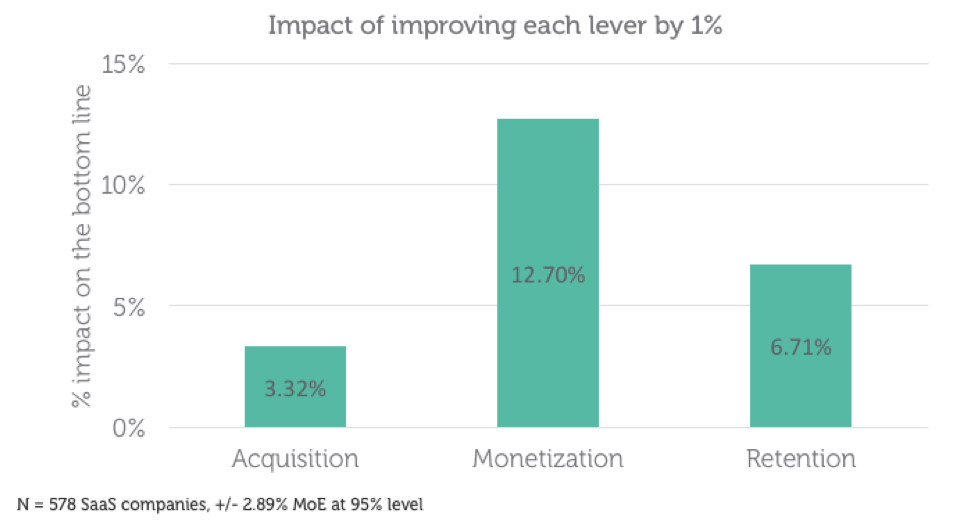

Growth Foundations
How to optimize for growth? Learn how to build a strong foundation for growth.

After Product/Market Fit, the most important thing is to grow your customer base.
To understand growth as a Product Manager, you need a deep understanding of why customers use your product. The goal is to move your customers to that first taste of value as soon as possible.
Then, you need a growth process in place. This allows your team to design experiments and build optimizations for your product. Everyone involved should be on the same page to make growth possible.
There are critical components for implementing an efficient and effective growth process. They are Acquisition, Activation, Retention, Monetization, and Testing and Optimization.
Building the foundations for growth early put companies in a great position to achieve hyper-growth.
On this section
Acquisition
Acquisition is how you acquire new customers. New businesses use short-term sales tactics to get their first ten customers. That’s great at the very beginning but terrible for sustainable growth.
Word of mouth is the most economical way to acquire customers. However, its returns diminish over time. As a Product Manager, you need to understand how to acquire customers in the long-term too.
In today’s competitive market it is easy to switch from one product to another. The increase of ads, content and social noise makes harder not only to acquire customers but also to retain them. The problem is that we are too obsessed with acquisition.
 From Patrick Campbell’s article. Resources section.
The data shows that retention and monetization are much more efficient and effective at driving growth. By improving retention or monetization you can get 2-4x the impact of improving acquisition.
The ideal customer
An ideal customer profile allows a company to be more efficient from a sales and marketing perspective. The more defined it is, the better targeted the sales team can be. All the efforts are invested in a segment of customers that is more willing and likely to find success with your product.
That said, the sales team should also be pushing a little. Since they talk to more prospective customers than any other team, they know what adjacent markets find your product valuable too.
The ideal customer profile should bend but not break.
Activation
Activation is all about turning acquired customers into active customers. The customers that use and value your solution on a regular basis.
Onboarding and first user experience are as important as driving customers to your solution. As a Product Manager, you should enable them to see the value of your product as soon as possible. That is activation. The sooner the better.
Think about what the magic moment is for your product and get customers to experience it first.
A good practice is looking at the steps of your most successful customers. If you can identify the early actions that separate retained customers from the rest, you’ll be able to define what drives real customer value.
Once you know your key actions and frequency, try to replicate it and track changes over time.
Long-term Activation
A common mistake Product Managers make is focusing on activation for the first two weeks only. Activation cycles vary from product to product. But there are many ways to activate customers over their entire life cycle.
Customers might use a few key features, but there might have other areas of the product they don’t even know yet. Think about activation on a feature basis too.
Retention
Now that customers have taken the most important actions to get value, you need to make keep them around months after they signed up.
Here are a number of reasons why retention is so important:
- Retained customers for long periods are more likely to evangelize your product.
- Research suggests that retention is the most important variable to increase profits.
- Without retention, all your growth efforts are worthless.
Retention is the difference between long term sustainability and dying products. The impact on Customer Lifetime Value (LTV) is critical. This is especially true for subscription businesses.
Retention Strategy
Your retention strategy has to be proactive. If you wait until customers are about to leave before taking action, it might be too late.
Focus on providing meaningful value in a way that requires as little work as possible for customers. The ones who got this far are more likely to stay. The higher the engagement the more rapidly your active customer base will grow.
Monetization
Monetization is the process of matching the business model with customer value. The monetization has to feel fair to your customers. As a Product Manager, when you’re telling a prospect customer the story of your product, you never want her to think about pricing.
Make pricing to disappear as a consideration.
The key is to capture as much value as your customer’s experience with your product. It is a symbiotic relationship.
Pricing
The first thing to know about pricing is that you’re going to get it wrong. Pricing is a moving target. The second thing to know is that you need to iterate constantly.
In a healthy growing business, it is common to miss the target more than once. You might be setting the price too low to attract customers and never raising it or keeping a feature for free for too long.
Product Managers need to figure out what customers really care about. Is it cost or value? This is the starting point to determine the right pricing strategy.
Testing and Optimization
As a Product Manager that wants to stay ahead of the curve, you need to constantly test. Every experiment yields an opportunity to learn about your customers and grow further. The more testing you do, the more you learn.
A common mistake of product teams is to focus on a growth opportunity for too long. There is a point where other opportunities will be more promising. If a tactic is not working, fail fast and move on.
Growth tactics and channels are dynamic. What used to work yesterday it might not work today.
Growth is not about doing one major and single investment but the iterative improvement of the parts of the business that need to improve. Consistent improvements yield larger and larger increases in performance over time. They stack on top of one another and compound. That is how you get exponential growth.
You Are Not Your Customer
No matter how much you look like your customers, you are not them. The main reason to take this very seriously is the knowledge you and your team have about this problem. Consumer products are usually the most affected.
As a Product Manager, you must put the product in front of customers and observe. There is no replacement for this.
An experiment tells you what is going on but not why. Do a lot of qualitative research. That’s how you understand.
This is a first draft and a just a glance of what Growth is. Take the time to learn from the resources below. We keep them up to date!
Do you have any feedback? Please, let us know here.